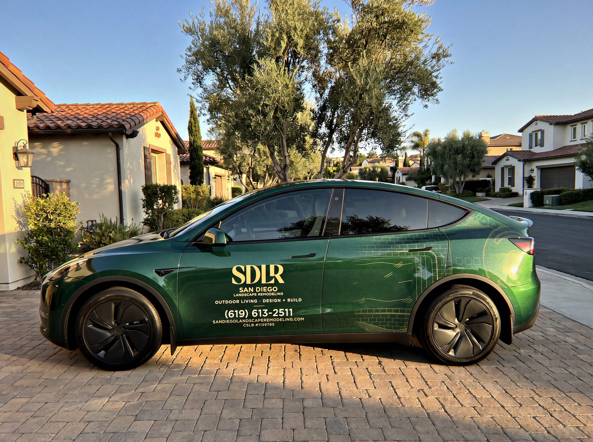
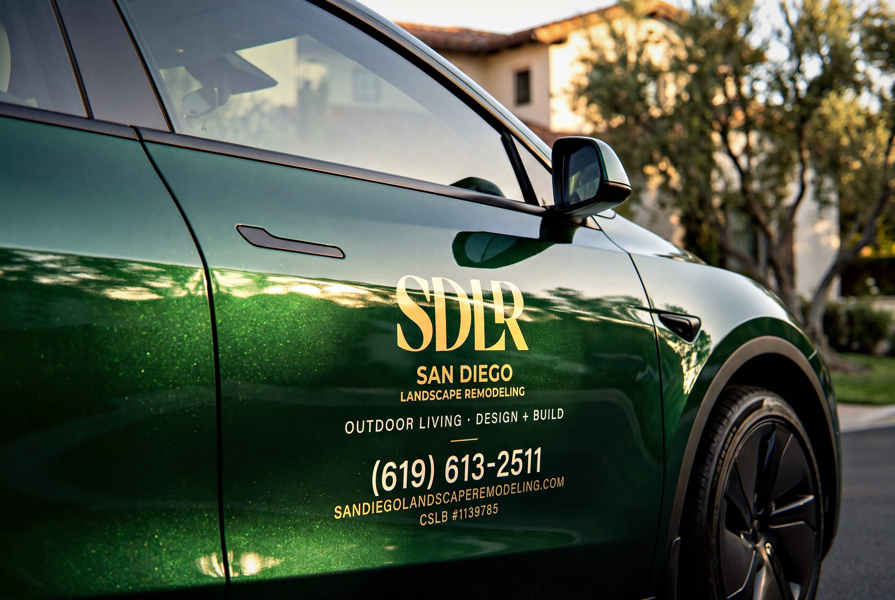
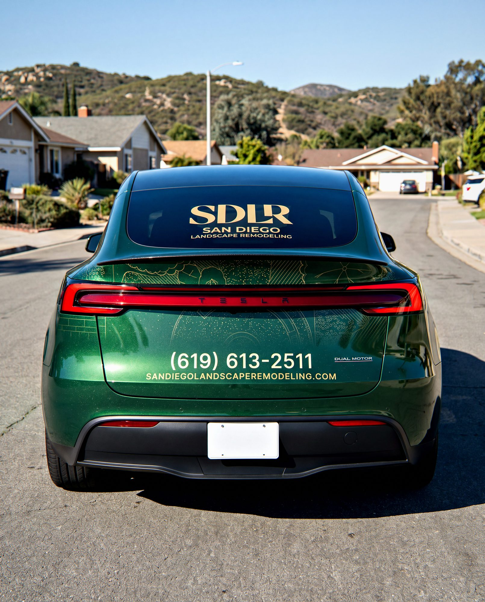
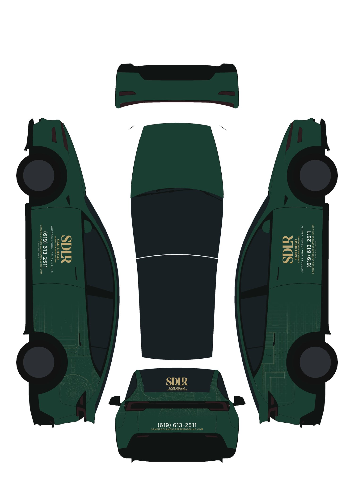
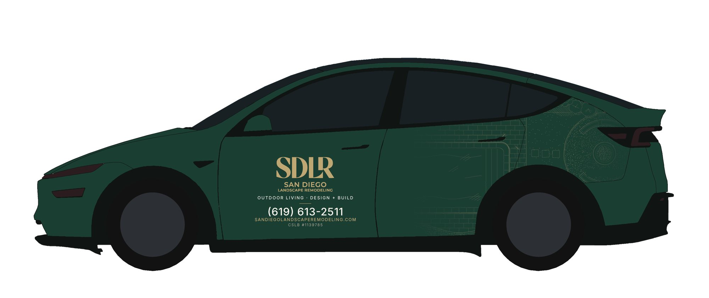
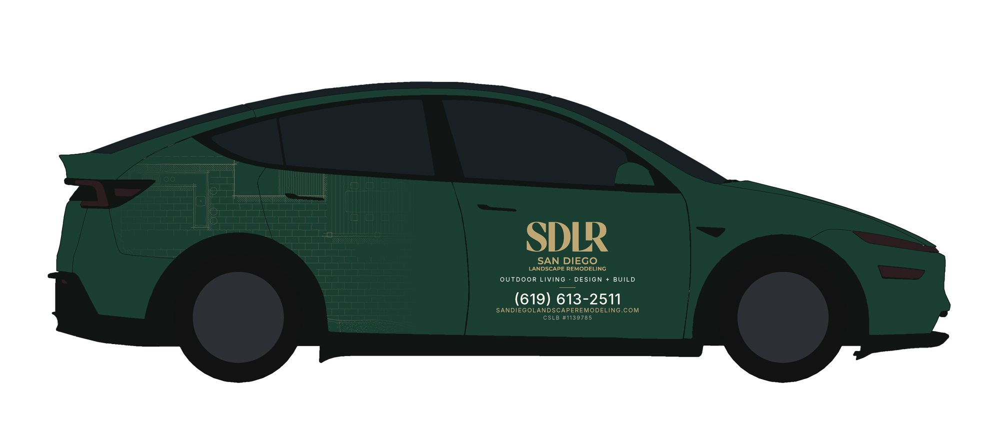
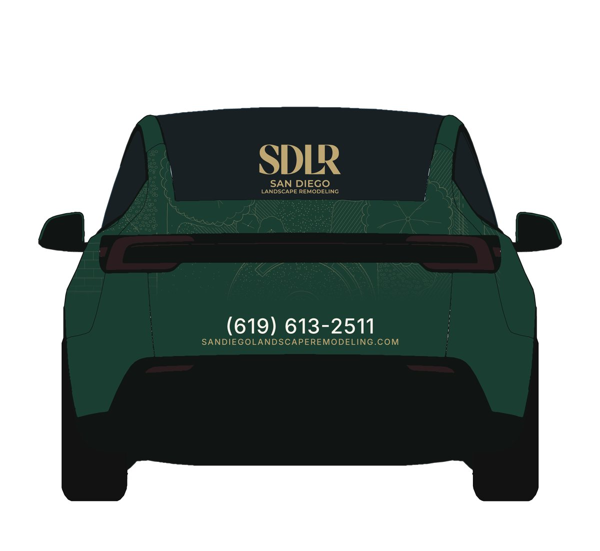
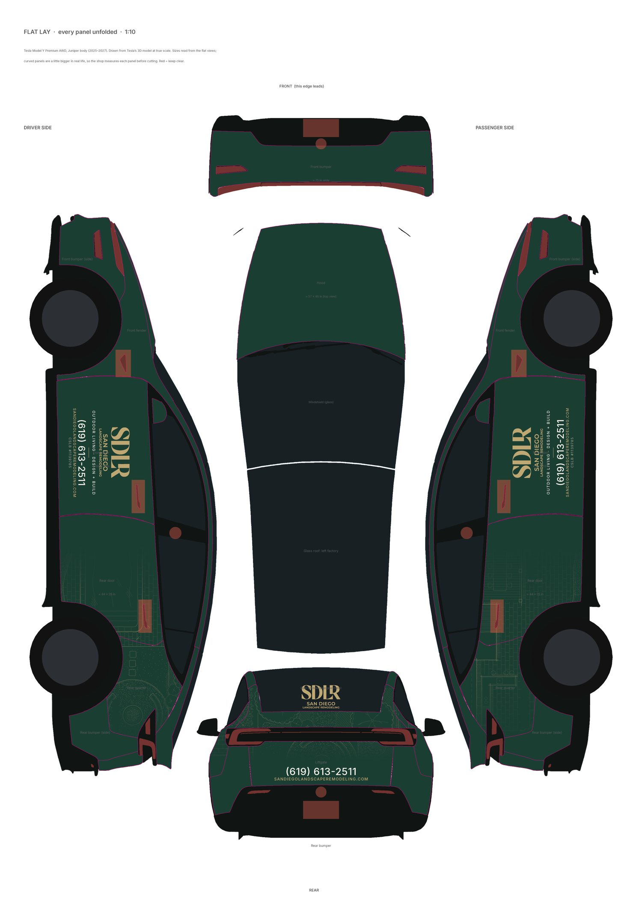

Version 3's design, with no coachline, on a metallic racing-green film with real flake: a deep gloss green that sparkles where the sun hits it. The lettering and the gold site plan are exactly version 3. The car in these images is Gio's own 2025 Juniper Model Y.
Photo-style images made with Magnific (AI, Nano Banana Pro). They are concept images, not photos of the wrapped car. The driver-side image was made directly from Gio's own photo of his car, so the body, the slim front light bar, the tail light and the black aero wheel covers are his. The rear and the door close-up were checked against his photos. Every word was proofread letter by letter; the exact artwork is in the proofs further down.



A printer can't print flake, because ink only makes flat colour. There are two real ways to build it:
Ask the shop to hold an MSG111 swatch next to a printed sample on the car in daylight, and to quote both.
The artwork is the same as version 3. The proofs show the green flat; on the car, the flake comes from the film.





| Car | 2025 Tesla Model Y Premium AWD, the new Juniper body, with both light bars and black 19 in aero wheel covers. The template is built from Tesla's own 3D model of this car. |
| Body | Metallic racing-green film with visible flake, gloss (Inozetek MSG111 is the reference) |
| Front doors | Centred stack, both sides: SDLR lockup (gold, 17 in) · OUTDOOR LIVING · DESIGN + BUILD (cream) · gold rule · (619) 613-2511 (cream, 2.25 in) · SANDIEGOLANDSCAPEREMODELING.COM (gold) · CSLB #1139785 |
| Rear doors, quarters, liftgate | The site plan in gold line art at 70%, fading in and out |
| Rear glass | Gold lockup, cut vinyl |
| Liftgate | (619) 613-2511 in cream, 2.4 in, over the gold website |
Working files (layered .ai, print PDF at 1:10, proof PDF, README) live in Drive:
02 Clients/san-diego-landscape-remodeling/Vehicle/wrap-design/2026-11-21-v5/ (versions 1 to 4 kept beside it)